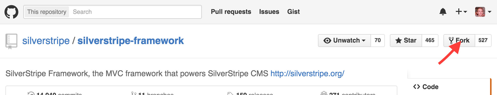
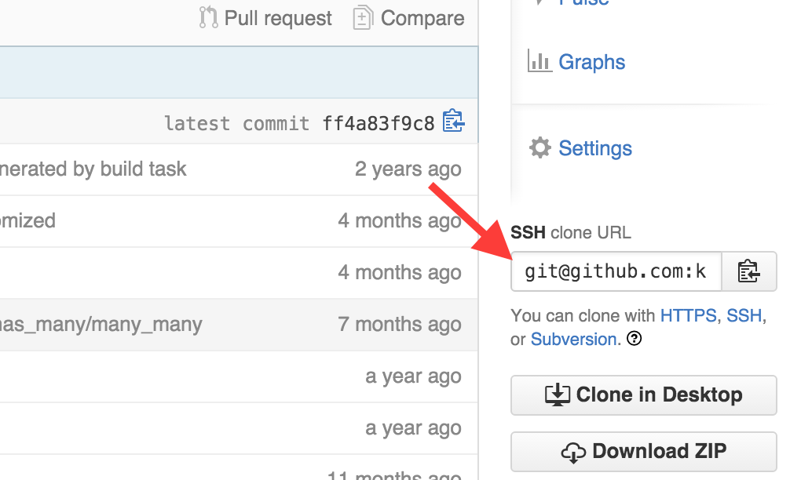
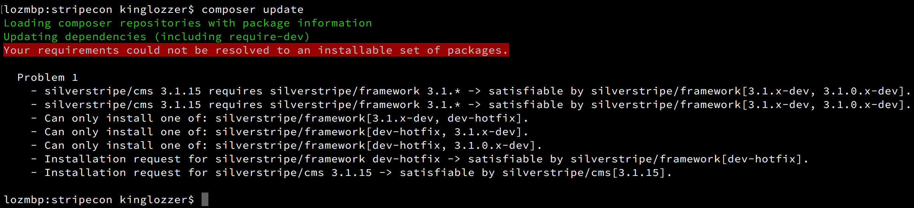
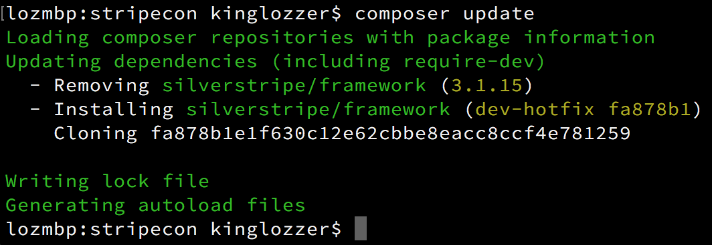

Why you shouldn’t edit SilverStripe core files
(and how to do it anyway)
By Loz Calver / @kinglozzer

What do you mean “editing core files”?
- Modifying someone else’s code
- Code outside the scope of “your project”
- Applies to framework, cms and any other modules
// DataObject.php public function getDefaultSearchContext() { return new SearchContext( $this->class, $this->scaffoldSearchFields(), $this->defaultSearchFilters() ); }// DataObject.php public function getDefaultSearchContext() { $context = new SearchContext( $this->class, $this->scaffoldSearchFields(), $this->defaultSearchFilters() ); $this->extend('updateDefaultSearchContext', $context); return $context; }
Why would I need to edit core files?
- Bugs - SilverStripe isn’t (quite) perfect
- Security
- need urgent/immediate fix
- email us! security@silverstripe.org
- Missing/upcoming features - time delay between minor versions
- Clients!
Why shouldn’t I edit core files?
- Other developers don’t know what you’ve done
- Updates are harder
- you should all be keeping up to date!
- eventually you’ll get bored or frustrated and give up
- You might accidentally introduce other issues
Workaround 1: Extensions
Example 1: adding database fields & extra methods
MyMemberExtension.php
<?php
class MyMemberExtension extends DataExtension {
private static $db = array(
'DateOfBirth' => 'SS_Datetime'
);
public function SayHi() {
return "Hi " . $this->owner->Name;
}
}
_config.yml
Member:
extensions:
- MyMemberExtension
Workaround 1: Extensions
Example 2: augmenting database queries
BlogPostFilter.php
<?php
class BlogPostFilter extends DataExtension {
public function augmentSQL(SQLQuery &$query) {
$stage = Versioned::current_stage();
if ($stage == 'Live' || !Permission::check('VIEW_DRAFT_CONTENT')) {
$sqlNow = Convert::raw2sql(SS_Datetime::now());
$query->addWhere(sprintf('"PublishDate" < \'%s\'', $sqlNow));
}
}
}
_config.yml
BlogPost:
extensions:
- BlogPostFilter
Workaround 1: Extensions
Pros
- Can be used to add things to built-in classes
- Reusable: package them up, release them as modules!
Cons/Caveats
- Reliant on extension points
- Extensions have limited power
Workaround 2: Injector
Example: adding an extension hook
ManyManyListWithHook.php
<?php
class ManyManyListWithHook extends ManyManyList {
public function add($item, $extraFields = null) {
parent::add($item, $extraFields);
if($item instanceof DataObject) {
$item->extend('onAfterManyManyAdd', $this);
}
}
}
_config.yml
Injector:
ManyManyList:
class: ManyManyListWithHook
Workaround 2: Injector
Example: using the extension hook
MemberExtension.php
<?php
class MemberExtension extends Extension {
public function onAfterManyManyAdd(ManyManyList $list) {
Debug::log('Member added to many_many relation');
}
}
_config.yml
Member:
extensions:
- MemberExtension
Workaround 2: Injector
Pros
- Can “replace” an entire class
- Super powerful
Cons/Caveats
- With great power comes great responsibility
- Must be instantiated with one of:
Class::create()Injector::inst()->get('Class')Injector::inst()->create('Class')Injector::inst()->createWithArgs('Class')
When all else fails, fork it!

- Create a fork, apply your fix
- Use Git to periodically rebase from “upstream”
- Can even use Composer to make things easier!
Example
composer.json { "require": { "silverstripe/cms": "3.1.15", "silverstripe/framework": "3.1.15" } }{ "require": { "silverstripe/cms": "3.1.15", "silverstripe/framework": "3.1.15" }, "repositories": [ { "type": "vcs", "url": "git@github.com:kinglozzer/sapphire.git" } ] }
Example
composer.json{ "require": { "silverstripe/cms": "3.1.15", "silverstripe/framework": "3.1.15" }, "repositories": [ { "type": "vcs", "url": "git@github.com:kinglozzer/sapphire.git" } ] }{ "require": { "silverstripe/cms": "3.1.15", "silverstripe/framework": "dev-hotfix" }, "repositories": [ { "type": "vcs", "url": "git@github.com:kinglozzer/sapphire.git" } ] }
Not quite...
Fixed!
composer.json{ "require": { "silverstripe/cms": "3.1.15", "silverstripe/framework": "dev-hotfix" }, "repositories": [ { "type": "vcs", "url": "git@github.com:kinglozzer/sapphire.git" } ] }{ "require": { "silverstripe/cms": "3.1.15", "silverstripe/framework": "dev-hotfix as 3.1.x-dev" }, "repositories": [ { "type": "vcs", "url": "git@github.com:kinglozzer/sapphire.git" } ] }
Forking
Pros
- Easier to:
- keep track of modifications made
- re-apply changes during updates - rebase/cherry-pick
- create a PR!
Cons/Caveats
- While easier, it’s still extra effort!
- Slows down composer updates
Summary
- Use extensions where possible
- For simple additions/fixes to methods, Injector should be okay
- For anything else you can’t work around, fork as last resort
- Use Composer!
Thanks/questions
Feedback welcomed!
 @kinglozzer @kinglozzer |
@kinglozzer |  lozcalver@bigfork.co.uk lozcalver@bigfork.co.uk |